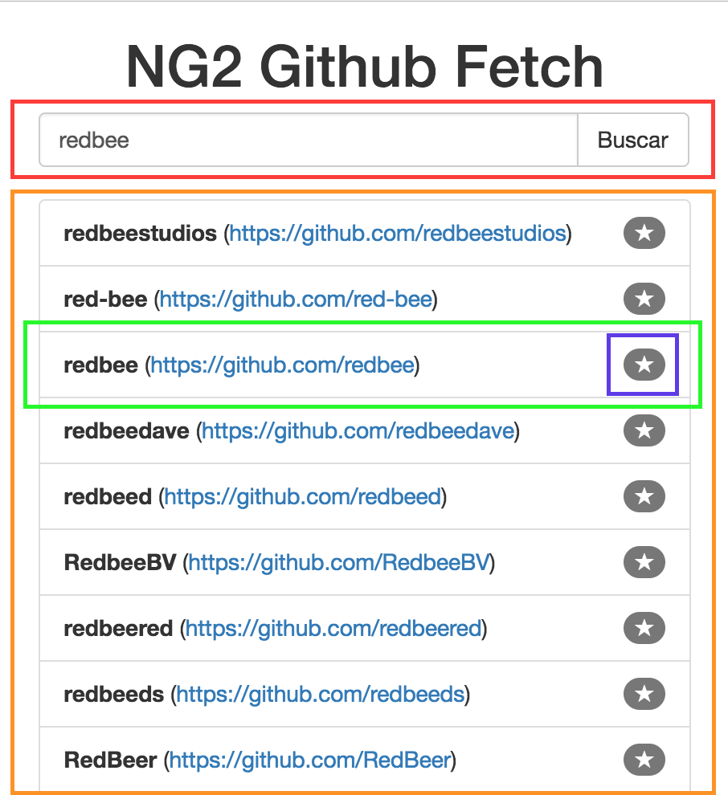

Webapps modernas
¿Qué son, por qué existen, y cómo se hacen?
Maxi Britez / @mapsi88 / matsi@redb.ee
Ignacio Mieites / @imieites / ignacio.mieites@redb.ee
Matias Gonzalez / @matitanio / mati@redb.ee
Ezequiel Apfel / @eapfel / ezequiel@redb.ee
// Todo:
// Introducción a aplicaciones WEB
// Evolución de aplicaciones: ServerRendered a BrowserBased
// Ember.js vs Angular.js vs Backbone.js vs React
// Angular2
Empecemos...

Server rendering

Origenes de Http
- Petición de páginas
- Carga inicial
- Caché
- Single endpoint
Pero... ¿Que pasaría si quisiera...?
- Hacer un chat
- Visualizar el muro de facebook
- Ver los tweets
Vamos a necesitar JS
En principio
solo para validar algunos campos...
function validateForm() {
var form = document.forms["myForm"];
var firstName = form["firstName"].value;
if (firstName == null || firstName == "") {
alert("Name must be filled out");
return false;
}
}
Después
necesitamos hacer algunas consultas http
function loadDoc() {
//Create http object -- Puaj!
var xhttp = new XMLHttpRequest();
//Some kind of openning connection -- Really?
xhttp.open("GET", "ajax_info.txt", true);
//Handle the result -- Just kill me
xhttp.onreadystatechange = function() {
if (xhttp.readyState == 4 && xhttp.status == 200) {
document.getElementById("demo").innerHTML = xhttp.responseText;
}
//Send, ok...
xhttp.send();
}
Necesitamos JQuery.js
function sayHi() {
$.get("/api/users/123", function(data, status){
alert("Hello: " + data.name);
});
}
Y que pasa si tengo muchas llamadas y callbacks...
fs.readdir(source, function (err, files) {
if (err) {
console.log('Error finding files: ' + err)
} else {
files.forEach(function (filename, fileIndex) {
console.log(filename)
gm(source + filename).size(function (err, values) {
if (err) {
console.log('Error identifying file size: ' + err)
} else {
console.log(filename + ' : ' + values)
aspect = (values.width / values.height)
widths.forEach(function (width, widthIndex) {
height = Math.round(width / aspect)
console.log('resizing ' + filename + 'to ' + height + 'x' + height)
this.resize(width, height).write(dest + 'w' + width + '_' + filename, function(err) {
if (err) console.log('Error writing file: ' + err)
})
}.bind(this))
}
})
})
}
})
Diagrama de una app web JS

¿Cuál es la herramienta mas adecuada?

Angular

¿Por qué debería usar Angular?
Angular 2
Muy tarde...
- Muchos release candidates
- Es un freamework completamente distinto
- Muy grande, si solo quiero hacer algo sencillo
- La comunidad se fue a lo minimalista de react o vue
- Muchos problemas de diseño y retrabajo
Lo nuevo en Angular 2
Typescript
Componentes
Scoped styles

Servicios
@Injectable()
export class GithubFetchService {
baseUrl:string = 'https://api.github.com/search/users?q=';
constructor(private http: Http) { }
getUserList(nameQuery:string){
return this.http.get(this.baseUrl+nameQuery);
}
}
Observables
@Component{
selector: 'app-gf-detail',
templateUrl: './gf-detail.component.html',
styleUrls: ['./gf-detail.component.css']
})
export class GfDetailComponent implements OnInit {
user: any;
getUser(name:string){
this.gfService.getUser(name).subscribe(res => {
this.user = res.json();
console.log(this.user);
});
}
}
Directivas
No hay usuarios para mostrar.
Routing
@NgModule({
declarations: [ ... , ],
imports: [
... ,
RouterModule.forRoot([
{ path: 'user/:userName', component: GfDetailComponent },
{ path: '', component: GfMainComponent },
{ path: '**', component: GfMainComponent }
])
]
bootstrap: [AppComponent]
})